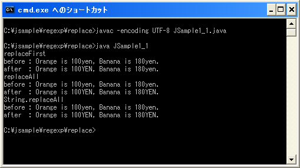

- Home ›
- Java入門 ›
- Java正規表現の使い方 ›
- 正規表現を使った置換
指定の文字列に置換
パターンにマッチした部分を他の文字列で置換する方法を確認していきます。
最初にマッチした部分を置換
まずはパターンに最初にマッチした部分を指定の文字列に置換する方法を確認します。Matcherクラスで定義されているreplaceFirstメソッドを使います。
replaceFirst public String replaceFirst(String replacement)
パターンとマッチする入力シーケンスの部分シーケンスのうち、最初の部分シーケンスを指定され
た置換文字列に置き換えます。
このメソッドはまず、この正規表現エンジンをリセットします。次に、入力シーケンスを走査して、
パターンとマッチする最初の文字列を検索します。パターンとマッチしない文字列は、結果文字列
に直接追加されます。 パターンとマッチした文字列は、置換文字列に置換されて結果に追加されま
す。appendReplacement メソッドと同様に、前方参照された部分シーケンスへの参照が置換文字列
に含まれる場合があります。
置換文字列内でバックスラッシュ (\) とドル記号 ($) を使用すると、それをリテラル置換文字列
として処理した場合とは結果が異なる場合があります。ドル記号は、先に説明したとおり、前方参
照された部分シーケンスへの参照として処理される場合があり、バックスラッシュは置換文字列内
のリテラル文字をエスケープするのに使用されます。
正規表現 dog、入力 "zzzdogzzzdogzzz"、および置換文字列 "cat" を指定した場合、その表現の正
規表現エンジン上でこのメソッドを呼び出すと、文字列 "zzzcatzzzdogzzz" が生成されます。
このメソッドを呼び出すと、この正規表現エンジンの状態が変わります。この正規表現エンジンを
後続のマッチ操作で使用する場合は、最初に正規表現エンジンをリセットする必要があります。
パラメータ:
replacement - 置換文字列
戻り値:
最初にマッチした部分シーケンスを置換文字列で置き換え、前方参照された部分シーケンスを必
要に応じて置換することによって構築された文字列
1番目の引数には置換したい文字列を指定して下さい。パターンに最初にマッチした部分を引数に指定した文字列で置換した結果を戻り値として返します。
次の例を見てください。
String str = "Orange is 100yen, Banana is 180yen.";
String regex = "yen";
Pattern p = Pattern.compile(regex);
Matcher m = p.matcher(str);
String result = m.replaceFirst("YEN");
最初にパターンにマッチした部分をreplaceFirstメソッドの引数である"YEN"に置き換えますので、結果として次の文字列を取得できます。
Orange is 100YEN, Banana is 180yen.
マッチした部分を全て置換
続いてパターンにマッチした部分を全て指定の文字列に置換する方法を確認します。Matcherクラスで定義されているreplaceAllメソッドを使います。
replaceAll public String replaceAll(String replacement)
パターンとマッチする入力シーケンスの部分シーケンスを、指定された置換文字列に置き換えます。
このメソッドはまず、この正規表現エンジンをリセットします。次に、入力シーケンスを走査して、
パターンとマッチする文字列を検索します。パターンとマッチしない文字列は、結果文字列に直接追
加されます。 パターンとマッチした文字列は、置換文字列に置換されて結果に追加されます。
appendReplacement メソッドと同様に、前方参照された部分シーケンスへの参照が置換文字列に含ま
れる場合があります。
置換文字列内でバックスラッシュ (\) とドル記号 ($) を使用すると、それをリテラル置換文字列と
して処理した場合とは結果が異なる場合があります。ドル記号は、先に説明したとおり、前方参照さ
れた部分シーケンスへの参照として処理される場合があり、バックスラッシュは置換文字列内のリテ
ラル文字をエスケープするのに使用されます。
正規表現 a*b、入力 "aabfooaabfooabfoob"、および置換文字列 "-" を指定した場合、その表現の正
規表現エンジン上でこのメソッドを呼び出すと、文字列 "-foo-foo-foo-" が生成されます。
このメソッドを呼び出すと、この正規表現エンジンの状態が変わります。この正規表現エンジンを後
続のマッチ操作で使用する場合は、最初に正規表現エンジンをリセットする必要があります。
パラメータ:
replacement - 置換文字列
戻り値:
マッチしたすべての部分シーケンスを置換文字列で置き換え、前方参照された部分シーケンスを必
要に応じて置換することによって構築された文字列
1番目の引数には置換したい文字列を指定して下さい。今度のメソッドではパターンにマッチした部分を全て引数に指定した文字列で置換した結果を戻り値として返します。
次の例を見てください。
String str = "Orange is 100yen, Banana is 180yen.";
String regex = "yen";
Pattern p = Pattern.compile(regex);
Matcher m = p.matcher(str);
String result = m.replaceAll("YEN");
パターンにマッチした部分を全てreplaceAllメソッドの引数である"YEN"に置き換えますので、結果として次の文字列を取得できます。
Orange is 100YEN, Banana is 180YEN.
Stringクラスのメソッド
ここで紹介したメソッドはStringクラスで定義されている同名メソッドを使っても同じ結果を得ることができます。
パターンに最初にマッチした部分を指定の文字列に置換するにはStringクラスで定義されているreplaceFirstメソッドを使います。
replaceFirst public String replaceFirst(String regex, String replacement)
指定された正規表現に一致する、この文字列の最初の部分文字列に対し、指定された置換を実行し ます。 このフォームのメソッド呼び出し str.replaceFirst(regex, repl) では、次の式と正確に同じ結 果が得られます。 Pattern.compile(regex).matcher(str).replaceFirst(repl) 置換文字列内でバックスラッシュ (\) とドル記号 ($) を使用すると、それをリテラル置換文字列 として処理した場合とは結果が異なる場合があります。Matcher.replaceFirst(java.lang.String) を参照してください。必要に応じて、Matcher.quoteReplacement(java.lang.String) を使用して、 これらの文字に特別な意味を持たせないようにしてください。 パラメータ: regex - この文字列との一致を判定する正規表現 replacement - 最初に一致するものに置き換えられる文字列 戻り値: 結果として得られる String 例外: PatternSyntaxException - 正規表現の構文が無効な場合
1番目の引数には正規表現のパターンの元となる文字列を指定します。そして2番目の引数には置換したい文字列を指定して下さい。パターンに最初にマッチした部分を引数に指定した文字列で置換した結果を戻り値として返します。
またパターンにマッチした部分を全て指定の文字列に置換するにはStringクラスで定義されているreplaceAllメソッドを使います。
replaceAll public String replaceAll(String regex, String replacement)
指定された正規表現に一致する、この文字列の各部分文字列に対し、指定された置換を実行します。 このフォームのメソッド呼び出し str.replaceAll(regex, repl) では、次の式と正確に同じ結果が 得られます。 Pattern.compile(regex).matcher(str).replaceAll(repl) 置換文字列内でバックスラッシュ (\) とドル記号 ($) を使用すると、それをリテラル置換文字列と して処理した場合とは結果が異なる場合があります。Matcher.replaceAll を参照してください。必 要に応じて、Matcher.quoteReplacement(java.lang.String) を使用して、これらの文字に特別な意 味を持たせないようにしてください。 パラメータ: regex - この文字列との一致を判定する正規表現 replacement - 一致するものそれぞれに置き換えられる文字列 戻り値: 結果として得られる String 例外: PatternSyntaxException - 正規表現の構文が無効な場合
1番目の引数には正規表現のパターンの元となる文字列を指定します。そして2番目の引数には置換したい文字列を指定して下さい。パターンにマッチした全ての部分を引数に指定した文字列で置換した結果を戻り値として返します。
次の例を見てください。
String str = "Orange is 100yen, Banana is 180yen."; String regex = "yen"; String result = str.replaceAll(regex, "YEN");
ターゲット文字列を表すStringクラスのオブジェクトに対してreplaceFirstメソッドまたはreplaceAllメソッドを実行して下さい。結果としてはMatcherクラスのメソッドを使った場合と同じ結果を得ることができます。
Orange is 100YEN, Banana is 180YEN.
サンプルプログラム
では実際に試してみます。
import java.util.regex.Pattern;
import java.util.regex.Matcher;
class JSample1_1{
public static void main(String args[]){
String str = "Orange is 100yen, Banana is 180yen.";
String regex = "yen";
Pattern p = Pattern.compile(regex);
Matcher m = p.matcher(str);
String result1 = m.replaceFirst("YEN");
System.out.println("replaceFirst");
System.out.println("before : " + str);
System.out.println("after : " + result1);
String result2 = m.replaceAll("YEN");
System.out.println("replaceAll");
System.out.println("before : " + str);
System.out.println("after : " + result2);
String result3 = str.replaceAll(regex, "YEN");
System.out.println("String.replaceAll");
System.out.println("before : " + str);
System.out.println("after : " + result3);
}
}
ではコンパイルを行った上で実行してみます。

( Written by Tatsuo Ikura )

著者 / TATSUO IKURA
初心者～中級者の方を対象としたプログラミング方法や開発環境の構築の解説を行うサイトの運営を行っています。